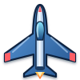
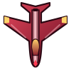
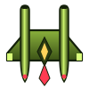
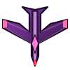
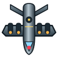
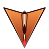
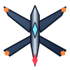
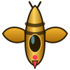
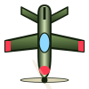
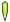

共 20 个 SVG 素材：1 架我方战机、10 架敌机、9 种弹丸。全部纯矢量、透明背景，可无损缩放与改色。
| 预览 | 文件名 | 尺寸 | 阵营 | 作用与用法建议 |
|---|---|---|---|---|
| 我方单位 | ||||
 |
game-plane.svg |
100 × 100 | 我方 | 玩家主控战机机头朝上，蓝白机身 + 橙色尾焰 + 座舱高光。用于玩家精灵、HUD 头像、选机界面展示。 |
| 敌方单位 · 10 种机型 | ||||
 |
enemy-01-viper.svg |
100 × 100 | 敌方 | 后掠翼基础拦截机（深红）与玩家机同构型的敌方版本，轮廓易读。适合第一关杂兵、直线俯冲编队。 |
enemy-02-wraith.svg |
100 × 100 | 敌方 | 隐形飞翼（暗紫）大翼展、无尾三角翼，锯齿后缘。适合中后期精英机、慢速高空轰炸单位。 | |
 |
enemy-03-twinfang.svg |
100 × 100 | 敌方 | 双尾撑双机身（毒绿）中央红色刺刀鼻 + 双机鼻，正面火力集中。适合正面压制型编队、双管齐射。 |
enemy-04-saucer.svg |
100 × 100 | 敌方 | 飞碟 / 圆盘单位（钢青）圆形轮廓 + 下方前炮，判定框可直接用圆。适合悬停敌人、Boss 护卫、精英浮游机。 | |
 |
enemy-05-batwing.svg |
100 × 100 | 敌方 | 分叉蝙蝠翼（紫红）异形翼面 + 分叉翼尖，生物感强。适合虫族 / 异形阵营的快速俯冲机。 |
 |
enemy-06-fortress.svg |
100 × 100 | 敌方 | 四发重型轰炸机（钢灰）宽厚机身、四个引擎吊舱、玻璃机鼻。适合高血量单位、Boss 底座或关底护航。 |
 |
enemy-07-dart.svg |
100 × 100 | 敌方 | 针形三角箭（橙红）极细长机身，正面投影面积小。适合高速冲刺、自杀式撞击机。 |
 |
enemy-08-crosswing.svg |
100 × 100 | 敌方 | 四翼 X 型星际战机（蓝黑）四片斜翼 + 橙色翼尖引擎灯。适合外星阵营精英机、分队指挥官。 |
 |
enemy-09-hornet.svg |
100 × 100 | 敌方 | 蜂型圆润侦察机（金黄）警戒条纹 + 大座舱 + 螫针炮。适合成群出现的蜂群小怪，数量多、单体弱。 |
 |
enemy-10-prop.svg |
100 × 100 | 敌方 | 螺旋桨复古战机（墨绿）平直翼 + 下方桨盘 + 红色机鼻。适合开场教学关的低速练习目标。 |
| 我方弹幕 · 3 种（朝上） | ||||
player-bullet-01-plasma.svg |
12 × 28 | 我方 | 等离子主炮白芯 + 青蓝光晕，水滴形弹体。主武器普攻，可 2–3 发并排形成基础弹幕。 | |
player-bullet-02-laser.svg |
8 × 34 | 我方 | 细激光束两端渐隐 + 中心白线，细长穿透感。适合高射速武器或蓄力光束的循环段。 | |
player-bullet-03-missile.svg |
14 × 30 | 我方 | 微型导弹白蓝弹体 + 小尾翼 + 橙色尾焰。适合副武器、追踪弹或清屏道具的弹体。 | |
| 敌方弹幕 · 6 种（朝下） | ||||
enemy-bullet-01-orb.svg |
16 × 16 | 敌方 | 橙红能量球径向渐变高光，无方向性。杂兵散射弹、扇形弹幕的基础弹丸，可随意旋转。 | |
enemy-bullet-02-shard.svg |
14 × 20 | 敌方 | 紫色晶片弹菱形 + 白色中线，适合旋转飞行。用于斜向弹幕、回旋弹、环绕型攻击。 | |
enemy-bullet-03-plasma.svg |
16 × 24 | 敌方 | 绿色等离子荚上圆下尖的荚形，白绿核心。中速大弹，适合直线压制与三段式齐射。 | |
enemy-bullet-04-laser.svg |
8 × 30 | 敌方 | 橙红激光束尾部渐隐、弹头亮黄。适合狙击型敌人的预警射击、直线激光封锁。 | |
enemy-bullet-05-heavy.svg |
24 × 24 | 敌方 | 紫黑锯齿重弹双层光区 + 锯齿轮廓，体积最大。Boss 主炮、需要擦弹躲避的大判定弹。 | |
 |
enemy-bullet-06-needle.svg |
10 × 22 | 敌方 | 黄绿针形弹双尖细长，飞行阻力感强。适合高速直线弹、密集针幕与狙击补刀。 |